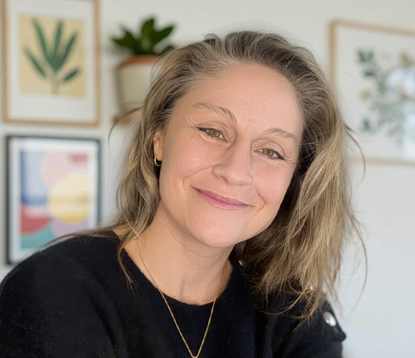
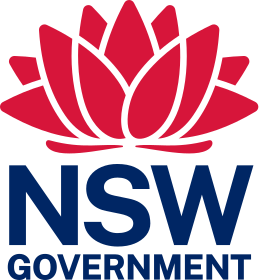

Services
I translate complex ideas into stories people understand

Hi, I’m Victoria. I’m a multidisciplinary designer with over 20 years’ experience in broadcast, advertising, branding and public sector communication. I’ve worked with clients in the UK, USA, Australia and New Zealand, from Hyundai and Sydney Opera House to NSW Government and Manawatū District Council.
I’ve spent twenty years making things people choose to watch. I started in advertising and television, where you learn to hold attention through colour, character, and timing. Later I worked inside local government, so I know how public communication gets made: the plain-language standards, the accessibility requirements, the sign-off chain. I know how to bring good ideas through that process.
What I love most is translating complex subjects into stories people can follow, remember and act on. When you work with me, you deal directly with the person making the work, from first conversation to final file. I’m also a supplier on the All-of-Government Creative and Media Services panel.
Animation & Motion Graphics
Explainers, animated infographics, campaign spots and event content that make complex ideas easy to follow. Each hero piece is planned to become cutdowns, social clips and stills, so your budget goes further.
- Explainer videos for services, policies, science and technology
- Campaign ads for TV, cinema, online and social
- Animated infographics and data animation
- Social media video, cutdowns and versions
- Video production and editing
- Training, onboarding and internal comms videos
- Motion graphics for events and awards
- Title sequences and broadcast graphics packages
- Digital screen and billboard animation
- Logo animation and animated brand assets
- Captions, subtitles and language versions
Brand & Visual Identity
A brand people recognise and your team can actually use. I start by understanding your organisation, then build an identity system with clear rules, templates and assets, so your brand stays consistent long after launch.
- Brand discovery and positioning
- Logos and logo versions
- Colour, typography and graphic language
- Brand guidelines
- Templates
- Icon sets and illustration styles
- Campaign and sub-brand identities
- Brand refreshes that build on what already works
Graphic & Information Design
Design that gets information seen and understood. Campaign and engagement material across print and digital, infographics and illustration that make data easy to follow, and Annual Reports, Long Term Plans and consultation documents people can actually read.
Campaigns & engagement
- Marketing collateral
- Billboards, posters, bus backs
- Flyers, brochures, direct mail and rates inserts
- Social tiles, digital screens and web ads
- Event collateral: pull-up banners, flags and programmes
- Engagement materials: feedback forms, engagement tools
Information design
- Infographics and data visualisation
- Illustration
- Icon sets
- Signage and wayfinding
Reports & publications
- Annual Reports and Annual Plans
- Long Term Plans and consultation documents
- Strategies, policies and summary documents
- Impact reports, case studies and stakeholder newsletters
Selected clients
Who I've worked with



